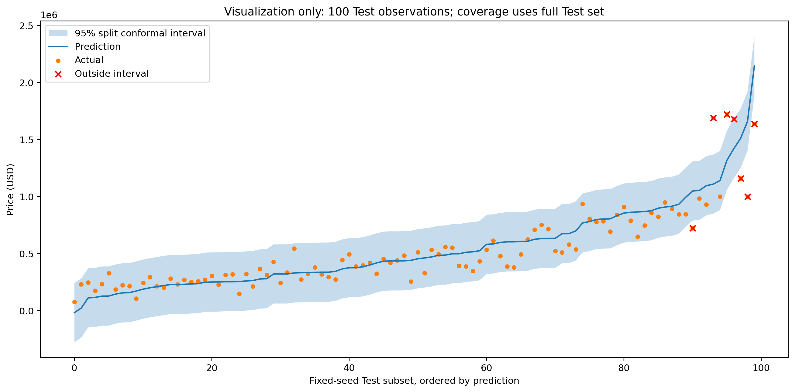
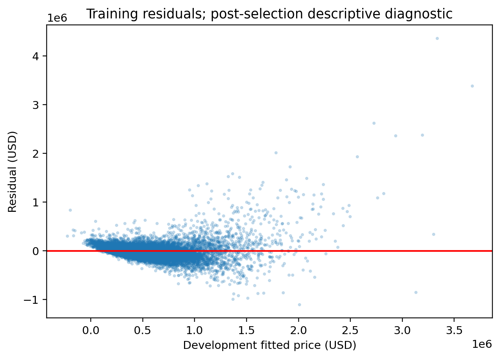
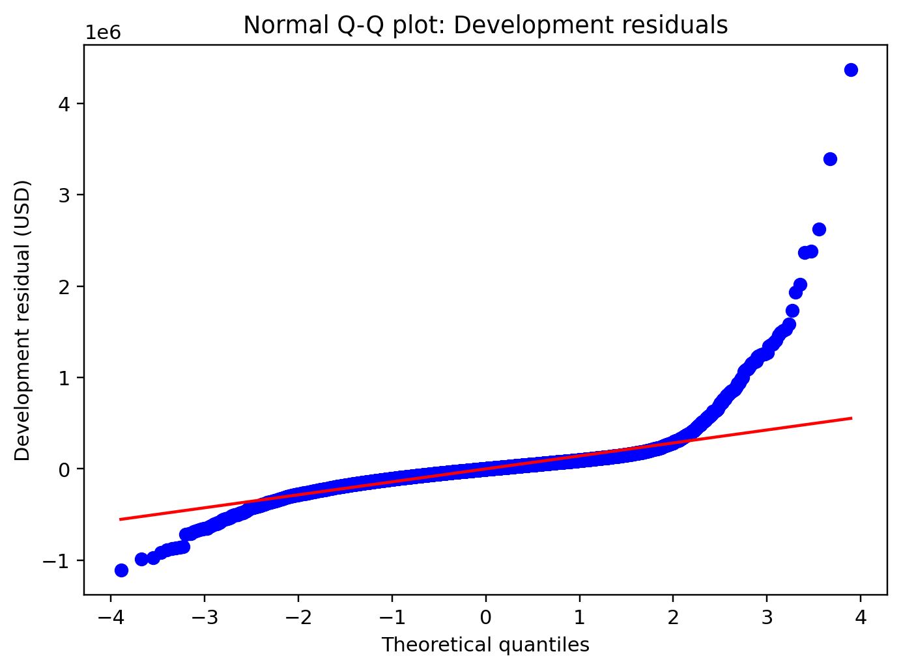

研究目標
比較特徵選擇是否能在維持接近預測表現下減少模型複雜度；不作現在或未來房市預測。
六種特徵選擇配置，一套多元線性迴歸實驗。
探索預測準確度、模型複雜度，以及價格的不確定性。
M0 的 CV RMSE 最低；M3 依預先指定的 one-standard-error 複雜度規則入選，不代表預測更準。
切換已完成的 Development 擬合模型；所有最終估計器皆為 LinearRegression。
Pearson、MI、RFE 僅搜尋 5、10、20、40、60 欄。此處呈現凍結設定，不進行重新訓練。
外層五折平均 RMSE（USD）；較低較好
M3 是複雜度規則的選擇；不是最低誤差的方法。折間 SD 請見比較表。
相同的五個 GroupKFold 驗證折
M3 的 RMSE 在全部五折都高於 M0；差距不等於顯著性檢定。
CV 平均與樣本標準差；Test 僅作描述性比較，不用來改選模型。
| 方法 | 最終欄數 | CV RMSE ± SD ↓ | Test MAE ↓ | Test RMSE ↓ | Test R² ↑ |
|---|
紫色標籤表示至少一個編碼欄位被保留；ZIP Code 可能只保留部分類別。
| 編碼欄位 | 保留狀態 | 係數 / 標準化單位 |
|---|
M3 的含截距設計矩陣為 61 欄、秩 60，個別 OLS 係數未必唯一。係數大小不等於唯一特徵重要性，也不代表因果效果；截距另列為基準預測。
從固定抽樣的真實 Test 房屋開始，再調整條件。所有試算均在瀏覽器內進行。
居住面積維持「地上面積＋地下室面積」；翻修年份 0 代表未翻修。輸入不會重新選模或改變研究結果。
固定 seed 抽樣的 100 筆 Test 交易 · USD
圖中只呈現固定子集；所有評估指標皆來自完整 Test 集。
凍結的 M3 模型 · 全部 4,324 筆 Test 交易
分箱界線固定於 Calibration 預測；最高房價組涵蓋率約 79.56%。
獨立 Calibration 集校準的 95% split conformal 區間，始終使用最終 M3 模型。

House Sales in King County, USA · 2014–2015 歷史交易
依 property ID 分組，seed=42。ZIP Code 以參考類別 one-hot 編碼，所有編碼欄位均在各訓練折內標準化；id 與 date 不進入模型。
M3 Development 訓練殘差的描述性診斷


比較特徵選擇是否能在維持接近預測表現下減少模型複雜度；不作現在或未來房市預測。
確認資料維度、重複房屋與面積恆等式；不為改善評分而刪除高價觀測值。
65% / 15% / 20% 群組切分。補值、編碼、標準化及篩選都在適當訓練折內學習。
六種配置共用外層五折、內層三折 Group CV。LASSO 只做篩選，再以 LinearRegression 擬合。
使用 Development CV 的 one-SE 規則凍結 M3，再用 Calibration 校準區間，最後評估 Test。
網頁讀取保存結果與模型參數，不重新訓練。模型、CSV、圖表與驗證程式均可在 GitHub 檢查。